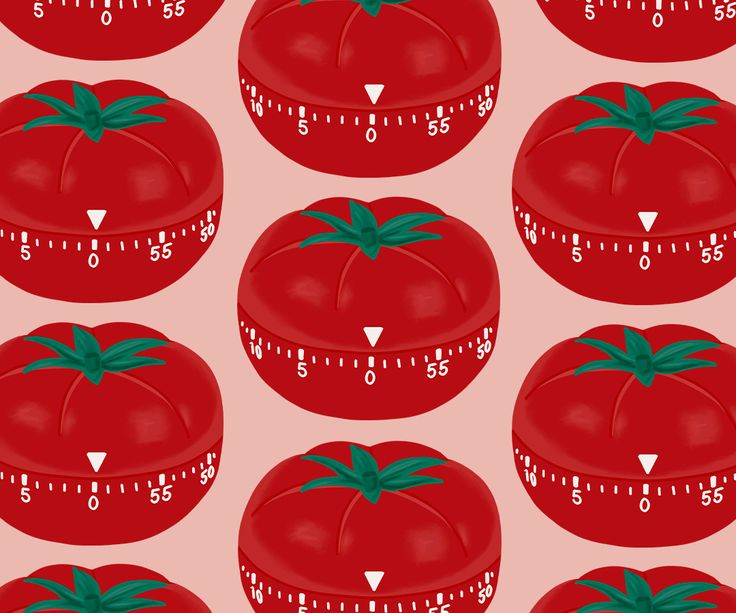

The Comprehensive Guide to the Pomodoro
Technique
Introduction:
In an era where distractions are plentiful and time seems to slip through our
fingers like sand, the quest for productivity has become more crucial than ever. Amidst this chaos, the
Pomodoro Technique stands as a beacon of hope, offering a simple yet powerful method to reclaim control
over
our time and focus. In this comprehensive guide, we delve deep into the principles, benefits, and
practical
applications of the Pomodoro Technique, empowering you to master your productivity and achieve your
goals
with efficiency and ease.

Section 1: Understanding the Pomodoro Technique
1.1 Origins and Evolution:
- Explore the origins of the Pomodoro Technique, tracing its roots
back to the late 1980s when Francesco Cirillo, an Italian developer, devised this method to enhance
his
own productivity.
- Examine how the technique has evolved over the years, gaining
popularity worldwide and becoming a staple in time management methodologies.
1.2 Core Principles:
- Break down the fundamental principles underlying the Pomodoro
Technique, including timeboxing, focused work intervals, and regular breaks.
- Highlight the significance of maintaining uninterrupted focus
during
each Pomodoro session, fostering deep concentration and minimizing distractions.
1.3 The Pomodoro Cycle:
- Define the structure of a typical Pomodoro cycle, consisting of
a
25-minute work interval (Pomodoro), followed by a short break of 5 minutes.
- Discuss the concept of "Pomodoro Sets," wherein four
Pomodoros are completed consecutively, culminating in a more extended break of 15-30 minutes.

Section 2: Benefits of the Pomodoro Technique
2.1 Enhanced Focus and Concentration:
- Examine how the Pomodoro Technique promotes laser-like focus by
breaking tasks into manageable segments and providing regular opportunities for mental
rejuvenation.
- Cite scientific research and studies supporting the efficacy of
timeboxing in improving attention span and cognitive performance.
2.2 Increased Productivity and Efficiency:
- Discuss how the structured nature of the Pomodoro Technique
helps
individuals prioritize tasks, maintain momentum, and accomplish more in less time.
- Illustrate real-world examples and success stories of
individuals
and organizations leveraging the Pomodoro Technique to boost productivity and workflow
efficiency.
2.3 Reduced Procrastination and Overwhelm:
- Explore how the Pomodoro Technique serves as a powerful antidote
to
procrastination and overwhelm by breaking down complex projects into manageable steps.
- Share strategies for overcoming resistance and building momentum
through consistent implementation of the Pomodoro Technique.
Section 3: Implementing the Pomodoro Technique
Effectively
3.1 Setting Clear Goals and Priorities:
- Emphasize the importance of goal setting and task prioritization
in
maximizing the effectiveness of the Pomodoro Technique.
- Provide actionable tips for identifying high-impact tasks and
structuring your workflow to align with your objectives.
3.2 Creating an Optimal Work Environment:
- Discuss the role of environment in facilitating focused work and
minimizing distractions during Pomodoro sessions.
- Offer practical advice for optimizing your workspace, including
decluttering, minimizing digital distractions, and leveraging tools like noise-canceling
headphones.
3.3 Adapting to Individual Needs and Preferences:
- Recognize that one size does not fit all and encourage
experimentation to tailor the Pomodoro Technique to individual preferences and working
styles.
- Explore variations and adaptations of the Pomodoro Technique,
such
as the use of different work intervals, alternating work-rest ratios, and integrating mindfulness
practices.
Section 4: Overcoming Common Challenges and Pitfalls
4.1 Dealing with Interruptions and Distractions:
- Address common challenges faced during Pomodoro sessions, such
as
interruptions, multitasking, and digital distractions.
- Offer practical strategies for minimizing interruptions and
maintaining focus, including setting boundaries, using productivity tools, and practicing mindful
awareness.
4.2 Managing Fatigue and Burnout:
- Acknowledge the importance of balancing productivity with
self-care
and preventing burnout while implementing the Pomodoro Technique.
- Provide guidance on managing mental and physical fatigue,
incorporating restorative activities into breaks, and practicing self-compassion.
Conclusion:
As we navigate the complexities of modern life, the Pomodoro Technique stands
as a
timeless tool for mastering productivity and reclaiming control over our time. By embracing its
principles
and integrating them into our daily routines, we can unlock our full potential, accomplish our goals
with
clarity and purpose, and cultivate a sense of fulfillment in both our personal and professional
endeavors.
So, why wait? Start your journey towards productivity mastery today with the Pomodoro Technique as your
trusted companion.